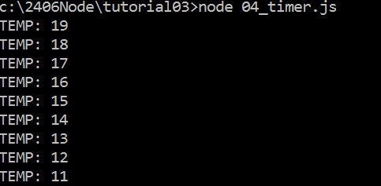
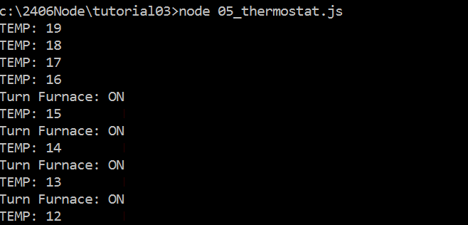
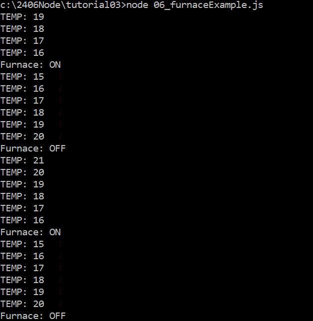
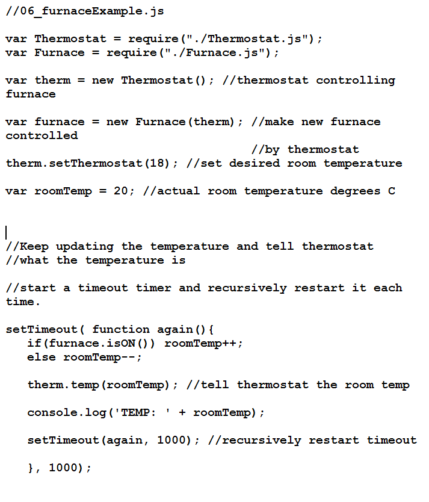

COMP 2406 - Fall 2014 Tutorial #3
Javascript Modules
© L.D. Nel 2014
Revisions
Description:
The purpose of this tutorial is to get you working with modular code in Javascript. As code gets complex it is usual to break it up into modules that hide much of their own details and expose some public features to other code. Javascript provides several mechanisms to do this. Most notably, functions, closures and by placing module code in its own .js file and then exporting the desired features to other code using the exports or module.exports statements.
In this tutorial you will work with code that is organized in modules like that. Note we are not talking about the npm modules that you install with the npm node package manager. Rather we are talking about simple ways to modularize your own code and import your own modules with the requires() function. We will also look at how a module can emit events that can be caught asynchronously by other modules. This is very much in the spirit of how node.js does things and will help you understand how the web sever code based on node.js and express.js works.
IMPORTANT: This tutorial is meant as a homework assignment and for you to demonstrate your results at your tutorial session. You will not be able to complete it if you only start when you come to the tutorial. You will need to read about and learn those aspects of javascript that pertain to this tutorial on your own and come up with a strategy to solve the problems.
The tutorial and code files are available on the course web site and there should also be a .zip with all the files together so you can download them all at once if that is more convenient.
To get credit for the tutorial you must complete, or make significant progress on, the exercise problems provided and demonstrate your results to the tutorial TA before you leave the tutorial.
Instructions:
Preliminary)
Run the following two examples from the demo code folder:
node 01_ownModules.js
and
node 02_calcExample.js
Open the source files and examine these files and those of the helper modules that they require(). Look at how they are different. In particular look at how the first example is based on a module that uses individual exports whereas the second example is based on a module that uses module.exports instead. Once you have made yourself familiar with this code go on to the problems below.
Problem 1)
Study and run the short demo code:
node 03_module_exportsExample.js
and explain to the TA why the output is what it is and what the significance of it is.
Problem 2)
Modify the code of example node 02_calcExample.js and its helper module Calculator.js so that it can be used to calculate restaurant bills that have both a tax and a tip component.
1) Change the 02_calcExample.js file from:
var Calculator = require("./Calculator.js");
var taxCalculator = new Calculator(13); //13% Ontario HST
var itemPrice = 200; //$200.00
console.log("price: $" + itemPrice);
console.log("tax: $" + taxCalculator.calcTax(itemPrice));
console.log("---------------");
console.log("total: $" + taxCalculator.calcTotal(itemPrice));
to the following: (Notice we are passing in two parameters: one for tax rate and one for tip rate). Also make whatever changes are necessary in the Calculator.js module.
var Calculator = require("./Calculator.js");
var calculator = new Calculator(13,15); //13%tax 15%tip
var itemPrice = 200; //$200.00
console.log("price: $" + itemPrice);
console.log("tip: $" + calculator.calcTip(itemPrice));
console.log("tax: $" + calculator.calcTax(itemPrice));
console.log("---------------");
console.log("total: $" + calculator.calcTotal(itemPrice));
Problem 3)
The Heat Is On
Open the run the run the example:
node 04_timer.js
See how a simple timer is set up by having a function respond asynchronously to a timeout event and then recursively regenerating the timeout. Once started the output will continue forever until you hit cntl-C. The output of this example is meant to represent the falling temperature of a room. The reason the temperature is falling is because there is no furnace coming on to heat the room.

Now open and run the next example:
node 05_thermostat.js
This time we have a helper module Thermostat.js meant to implement a thermostat. Notice how the thermostat is set up as an event emitter. It is continously being told the room temperature. Notice that when the temperature drops below about 16 that it continuously emits events meant to turn a furnace on. Notice also how the main file 05_thermostat.js is catching these events and printing the message that a furnace needs to be turned on.

Problem 3 -PartA
Modify the code in 05_themostat.js so that the temporary boolean var furnaceIsOn is set based on the caught events and hence the room should start warming up. Also change the code catching the events so that a message is only output when the furnace changes states from on to off. Once you have made these changes the output should show the room cooling, then the furnace warming it up and turning off, then the room starts cooling again etc. The output should look like this:

Finally we come to the real objective. We want to build an actual furnace module Furnace.js. This should model a furnace and handle the events emitted from the thermostat. In particular, build a Furnace.js module so that the code in the file 06_furnaceExample.js can run as is and produce the same output as above. The source code for this file is shown below. Notice how the thermostat is passed to the furnace when it is being constructed. Also notice the event catching code has obviously been moved to the furnace because it is no longer in the main source code. The following source file and the Thermostat.js files should not need modification. You just need to supply the Furnace.js module. Use the Calculator.js and Thermostatic.js modules for ideas on how to build the Furnace.js module.

When you have completed these problems demonstrate your code to a TA's to get credit for the tutorial.